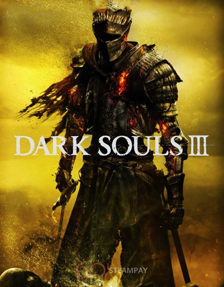
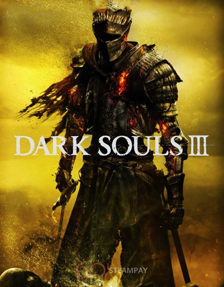

Kомпьютерная игра в жанре Action/RPG с открытым миром, разработанная и выпущенная компанией From Software для Xbox 360, PlayStation 3 и Microsoft Windows в 2014 году. За пределами Японии изданием игры занималась Bandai Namco. Игра является продолжением Dark Souls (2011).
Согласно сюжету игры, безымянный главный герой посещает королевство Дранглик в надежде исцелиться от проклятия, обратившего его в нежить. Для этого он должен завладеть несколькими «великими душами», принадлежащими демоническим обитателям Дранглика.
Подобно предыдущим играм серии, Dark Souls II отличается высоким уровнем сложности — от игрока ожидается, что он будет многократно терпеть неудачу в боях с сильными противниками и учиться на своих ошибках, чтобы продвинуться дальше. Dark Souls II содержит элементы многопользовательской игры как в виде кооперативной, так и PvP-составляющей — в ходе прохождения игрок может «призвать» в свою игру других игроков в качестве помощников, или же столкнуться с другими, враждебными игроками.